Скачать

Windows Рекомендуется
- Скачайте установщик, нажав на кнопку ниже
- Запустите его и следуйте инструкциям
Скачать установщик

macOS
на процессорах Intel (x64) или через Rosetta
- Скачайте образ, нажав на кнопку ниже
- Запустите его и установите лаунчер
Скачать образ

Установка Java вручную
- Загрузите и установите свежую версию Java для вашей платформы, например с сайта Adoptium
- Скачайте и запустите .jar-файл лаунчера. Он установит всё необходимое